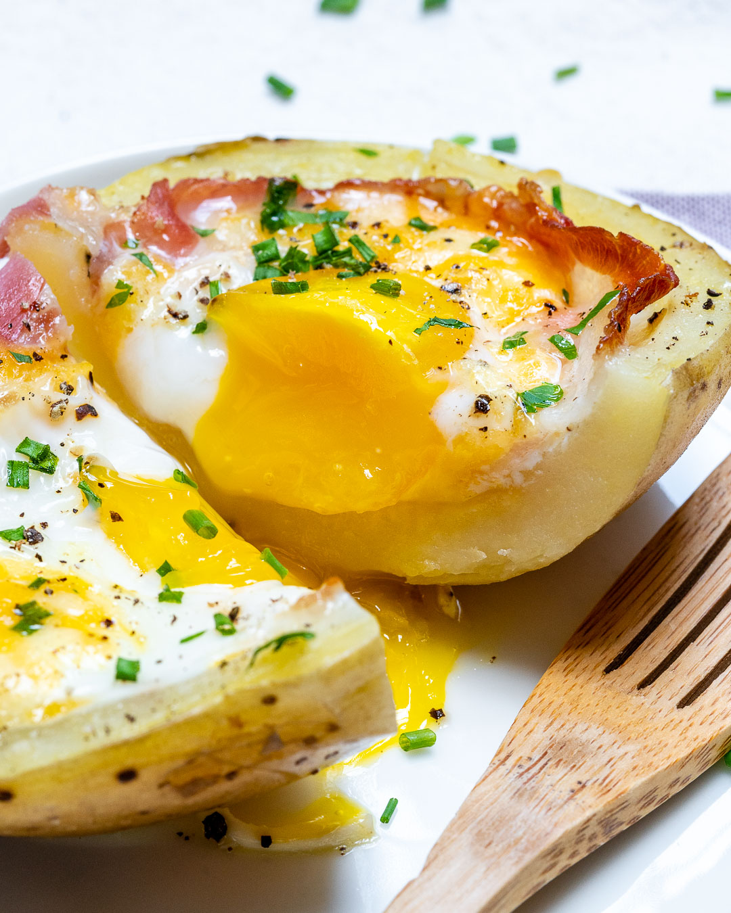
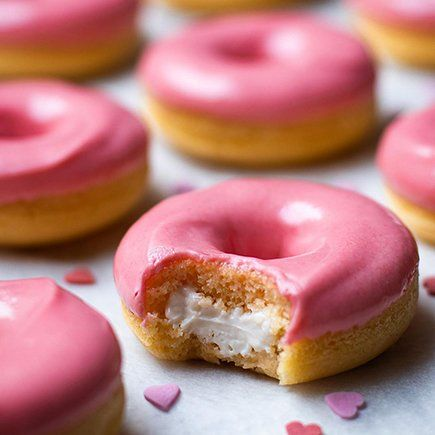

Tocino al horno doble

Ingredientes:
2 patatas russet medianas, lavadas
2 cucharadas de aceite de aguacate o aceite de oliva
4 rebanadas de tocino sin nitratos
4 huevos grandes
1/3 taza de queso cheddar rallado
2 cucharadas de cebollino en rodajas
sal marina y pimienta negra recién molida, al gusto
Instrucciones:
Coloque la rejilla del horno de manera que quede justo en el centro del horno, luego precaliente el horno a 400 grados f.
Después de lavar a fondo; Perfore esas patatas con un tenedor varias veces, luego frótelas o úntelas con aceite y frótelas por todas partes.
Coloque las patatas directamente sobre la rejilla central del horno.
Hornee durante 30-40 minutos o hasta que las patatas estén tiernas al pincharlas con un cuchillo.
Retirar del horno y dejar enfriar un poco.
Una vez que esté lista para manipular, corte cada papa por la mitad a lo largo y saque la pulpa como se muestra. Reserva la pulpa para otro uso.
Coloque los botes de papa en una fuente para horno y condimente con sal marina y pimienta.
Agregue una rebanada de tocino, queso rallado y casque suavemente un huevo en cada una como se muestra.
Regrese las papas al horno caliente y hornee durante unos 15 minutos, o hasta que las claras estén cuajadas y las yemas aún líquidas.
¡Adorne con cebollino fresco picado y pimienta negra molida y disfrute!
Recetas de Comidas

Donuts
Pizza
Patatas
Fideos Ramen
Copyright © Recetas Doble A Inc.